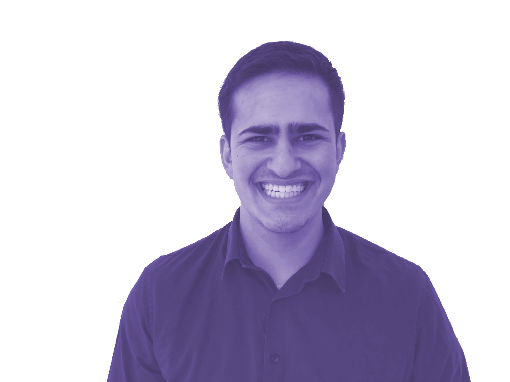
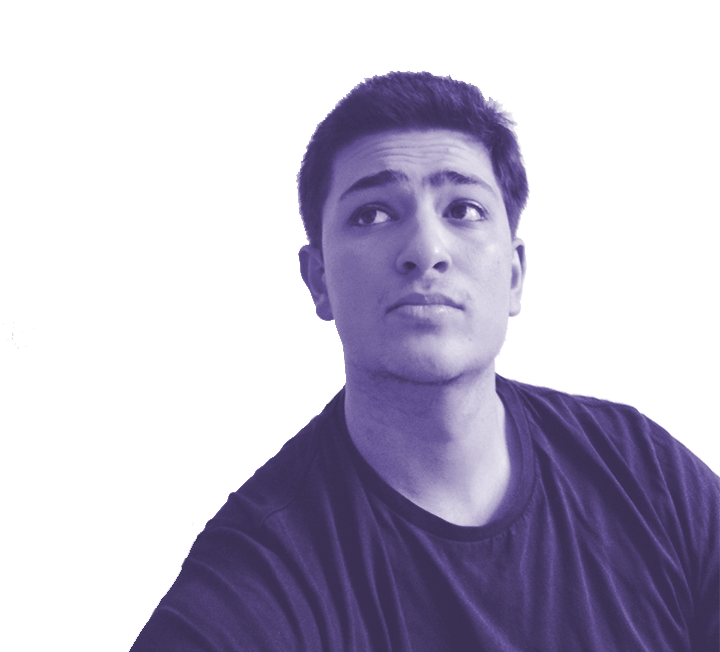

Pedram Babaei - Founder
Ich bin Pedram Babaei, Geschäftsführer von SEYM und zuständig für Finanzen. Ich interessiere mich für die Themen Finanzen, Börse, Unternehmertum und Philosophie. Seit längerem suche ich Leute in meinen Alter, die sich für die gleichen Themen interessieren und das gleiche Mindset haben wie ich, damit ich neues dazu lernen kann und mich mit Gleichgesinnten austauschen kann. Allerdings fand ich leider keine App oder Plattformen die mir das bieten, wonach ich suche: ein Ort, an dem sich Leute mit dem gleichen Interessen treffen, um sich auszutauschen. Deshalb wollen mein Team und ich daran arbeiten es euch zu ermöglichen, einen solchen Ort zu haben. Es war noch nie so einfach, Personen mit den gleichen Interessen, aus der ganzen Welt, kennenzulernen : SEYM macht es möglich.
Ramtin Babaei - Mentor
Ich bin Ramtin Babaei, Softwareentwickler bei Seym und Informatikstudent am Karlsruher Institut für Technologie (KIT). Ich bin bezüglich Start-up Teens Mentor und helfe bei allen technologischen Fragen und die Implementierung der App. Wie mein Bruder auch, suchte ich nach einer Plattform, die es mir ermöglicht, Menschen mit gleichen bzw. ähnlichen Interessen zu finden und sich mit Ihnen auszutauschen - der Mehrwert wäre enorm. Damit entstand die Idee hinter SEYM. Der Fokus liegt dabei hier jedoch - im Gegensatz zu Facebook, MeetUp etc. - nicht darin ein physisches Treffen zu organisieren oder ein ganzes soziales Netzwerk zu haben sondern eine Art real time messaging Plattform, bei der man jedoch Menschen aus der ganzen Welt kennen lernen kann und das gezielt auf Themen innerhalb der App, die jeweils nochmals spezifiziert sind. Wir bei SEYM wollen dies umsetzen.